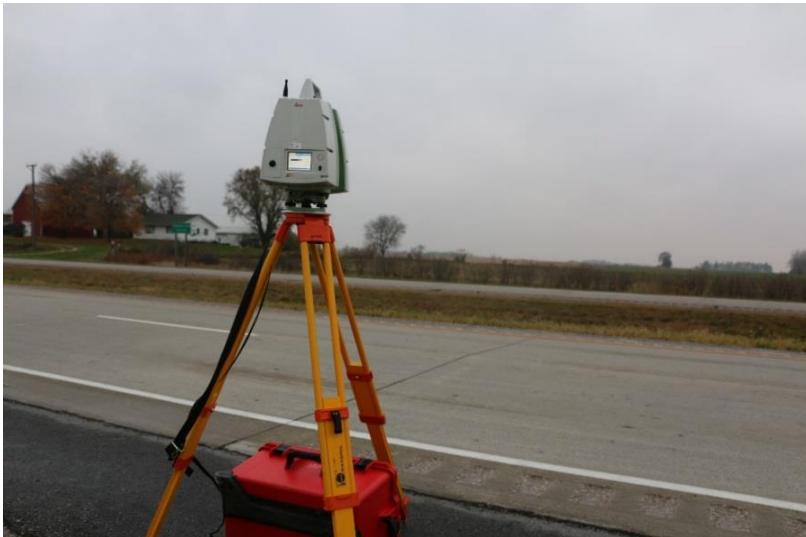
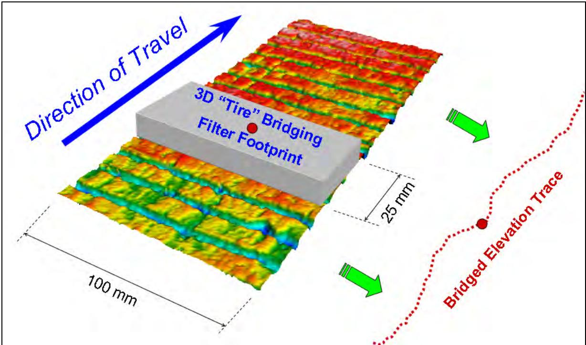
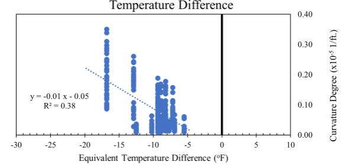
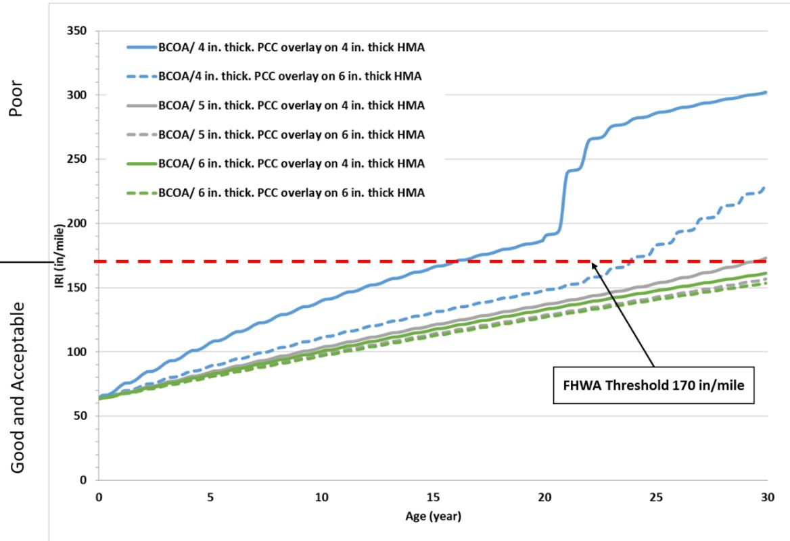
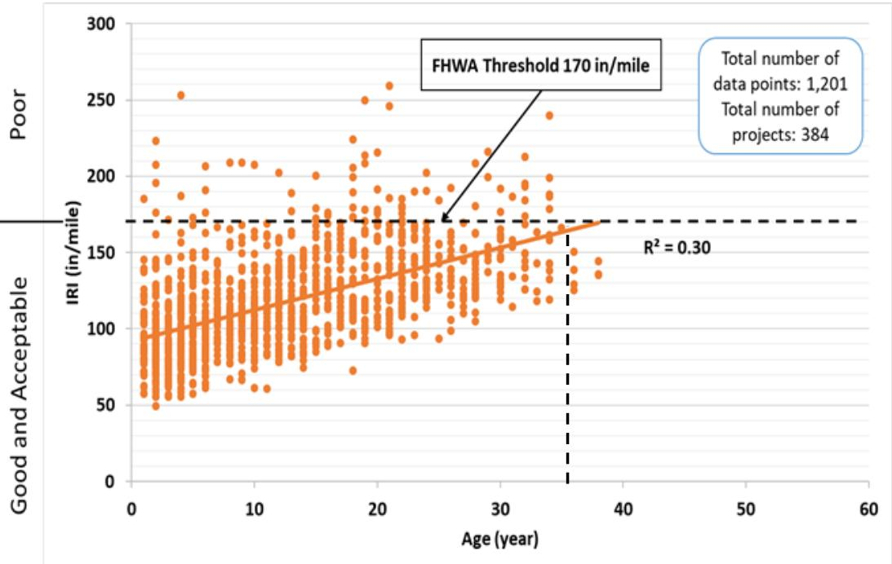
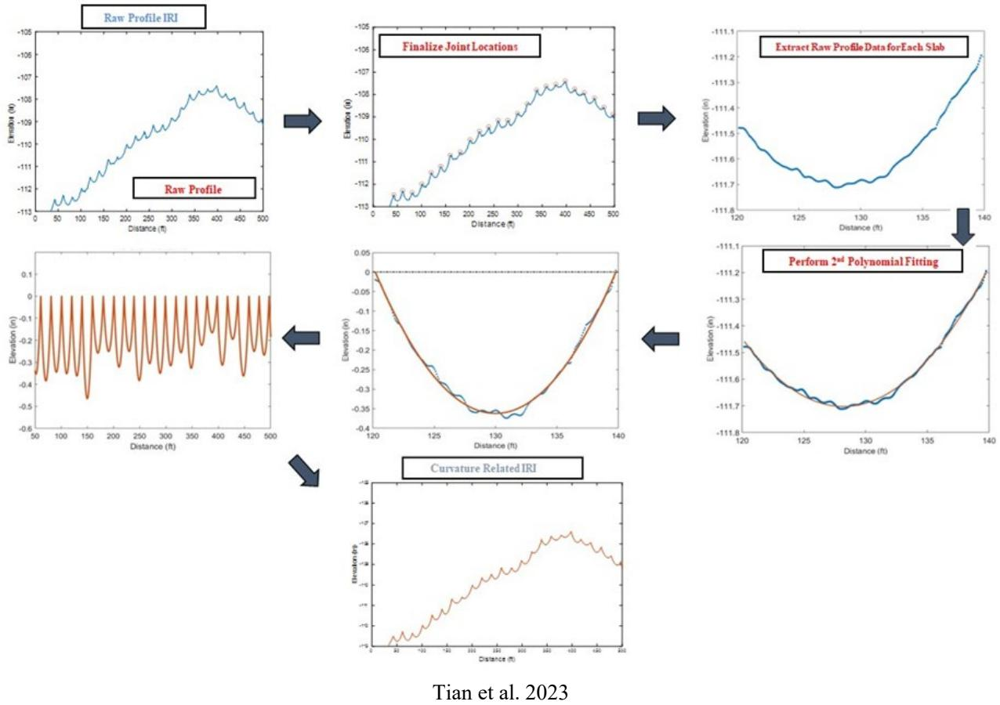

International Roughness Index (IRI)
A standardized roughness index calculated from a longitudinal road profile measurement, typically from an inertial profiler. Developed from the 1980s World Bank correlation experiment in Brazil (Sayers et al. 1986). “Tuned” to be as relevant as possible to as many vehicle types as possible. [1]
Sources (23)
Overview and Regulatory Standards
In the United States, the International Roughness Index (IRI) serves as the standard roughness index for network pavement management, and the FHWA requires states to report HPMS roughness in IRI. To support this, AASHTO provisional standards (MP 11-03, PP 49-03, PP 50-03, PP 51-03) provide the framework for IRI-based smoothness quality assurance programs, while the FHWA upper threshold limit for acceptable ride quality is set at an IRI value of 170 inches per mile [2].
As part of an FHWA pooled fund study, the University of Michigan was hired to help define the requirements for a proper profile reference measurement [1]. This research addresses issues such as the main weakness of the ASTM Standard E-950 profile comparison method, which is its emphasis on long-wavelength features resulting from the direct comparison of elevation values within a profile [1].
Measurement Technologies and Data Acquisition
In Iowa’s Pavement Management System, IRI values are computed from high-speed laser profiler data using accelerometers to remove vehicle motion effects before the index is entered into the database [3]; specifically, the IRI calculation relies on elevation data obtained by removing vehicle motion via accelerometers during high-speed laser profiling [3]. The IRI value reported for high-speed profiling corresponds to a half ride index calculated from profiles obtained by left and right wheel path sensors [4]. While wet smoothness measuring devices can be adapted to slipform paving operations to provide direct feedback to the finishing crew, allowing for the elimination of surface deviations while concrete remains plastic [5], real-time IRI (RIRI) values can exhibit regular fluctuations that correspond directly to the spacing of stringless robotic total stations controlling paver elevation, with wider station intervals leading to increased roughness on the side of the paver further from the control units [6]. Additionally, vibration from construction equipment such as dowel-bar inserters can cause real-time IRI sensors to record significantly higher roughness values compared to hardened profiles, as these short-wavelength irregularities are often removed by subsequent auto-float and hand finishing operations [6].
 FurRale rofiDtaItrati FuctatinRIConding Strigle Gn waps RI on 150’ base length matches real-time settings as viewed on the screen 27JuL2016) [6]
FurRale rofiDtaItrati FuctatinRIConding Strigle Gn waps RI on 150’ base length matches real-time settings as viewed on the screen 27JuL2016) [6]
Measurement challenges include profiler component performance, surface type effects (coarse texture), profile comparison methods (ASTM E-950 overemphasizes long wavelengths), and reference measurement adequacy. For instance, coarse textured pavement is especially challenging to profilers if the pavement is very smooth because the depth of texture is of the same scale as the height of longer wavelength features that affect a roughness index [1]. To address this, LMI Selcom is developing a sensor with a footprint in the shape of a line–100 mm long–that may be integrated by profiler manufacturer to improve performance on coarse-textured pavement [1], and the FHWA has sponsored a large profiler round-up that will help quantify the effect of coarse texture on just about every type of profiler operating in North America [1].
Reference measurement adequacy remains a concern, as rod and level measurements are rarely performed at a short enough sample interval to serve as a complete reference measurement because they take so long [1]. The ARRB Walking Profiler is an inclinometer-based device used for reference measurements that can measure a tenth mile in about 40 minutes [1], though choosing a specific device for reference measurements causes you to inherit these aspects of its operation as “truth,” including how it averages out texture and bridges over short narrow troughs [1]. While an enhanced lightweight profiler by Ames Engineering showed excellent repeatability on transversely tined and turf dragged pavement and vastly improved repeatability on longitudinally tined pavement [1], devices have been developed on roads that were extremely rough—the ability to distinguish subtle differences on very smooth new pavement has never been established. Alternatively, Terrestrial Laser Scanning (TLS) devices can capture the entire curvature shape of a pavement slab to generate 3D point cloud data, which is then used for applications such as IRI calculation, cross slope analysis, and crack detection [7].

Leica ScanStation C10 LiDAR device [7]Inertial profilers have largely replaced profilographs for construction quality assurance, with IRI values typically reported in meters per kilometer rather than inches per mile [3].
High-speed laser profilers compute the International Roughness Index (IRI) in meters per kilometer by measuring relative wheel-path elevations with lasers while using accelerometers to filter out vehicle motion [3].
Inertial profilers can underestimate longitudinal distance by more than 3% compared to paving operation profiles due to operator calibration errors, whereas properly calibrated lightweight inertial profilers are typically accurate to less than 1%; this discrepancy is often identified through shifts in the power spectral density plot caused by periodic roughness associated with dowel basket spacing [8].
Comparative Smoothness Indices
Profile analysis for smoothness assessment can include the calculation of a simulated Profilograph Index alongside standard IRI values to provide comparative historical context [9]. When processing raw elevation data from inclinometer profilers for visual evaluation, a Butterworth bandpass filter is applied to remove trends caused by grade changes; in contrast, ride statistics such as the International Roughness Index (IRI) are calculated directly from the raw profiles without requiring detrending [10]. To simulate how a tire would feel on the pavement before calculating IRI values, applying a 250 mm moving filter to raw profile data removes small imperfections such as texture [11]. Profile data processing may utilize the Karamihas algorithm to generate bridged elevation values, which helps account for specific measurement artifacts in the raw profile [9].

Schematic of 3D tire bridging filter on an actual 3D texture profile measured with RoboTex [9]IRI calculations for test sections are commonly performed using specialized software such as ProVal, which processes roadway profiles to determine roughness metrics for specific wheel paths within driving and passing lanes [12]. Additionally, Power spectral density (PSD) analysis can identify specific construction-related wavelengths contributing to roughness, such as joint spacing and concrete load intervals, which appear as dominant peaks in the frequency domain of the pavement profile [6].
 PSD Analysis Showing Joint Spacing at 15’ and Concrete Loads at 13’ with Associated Harmonic Wavelengths Contributing to Pavement Roughness [6]
PSD Analysis Showing Joint Spacing at 15’ and Concrete Loads at 13’ with Associated Harmonic Wavelengths Contributing to Pavement Roughness [6]
Impact on Vehicle Costs
Megatexture and roughness characteristics contribute directly to vehicle rolling resistance, which increases user costs through higher fuel consumption and accelerated vehicle wear. [5]
Hand finishing operations can eliminate localized rough features with a regular spacing of 20 feet, such as dowel bar ripple, leading to lower IRI values compared to profiles taken behind the paving pan. [8]
 Reduction in roughness by hand finishing [8]
Reduction in roughness by hand finishing [8]
Profile grinding using 3.05-mm spacers with jacks and a floating head can reduce the International Roughness Index (IRI) by up to 58% while simultaneously increasing frictional capacity by 27%. [13]
 Texture after diamond grinding [13]
Texture after diamond grinding [13]
Changes in the International Roughness Index (IRI) during early-age construction can significantly influence smoothness specification grades, potentially shifting pavement evaluation from full pay ranges into penalty or correction categories. [14]
Real-time IRI measurements taken on the side of a paver matching existing pavement are consistently rougher than those on the opposite side, indicating that transition zones between new and old surfaces introduce distinct roughness patterns not present in pilot lane paving. [6]
The IRI is sensitive to roughness with a wavelength near three feet, which can cause values to be influenced by extraneous profile content that does not appear in hardened concrete profiles. [8]
Dowel bar ripple can cause significant localized roughness differences across wheel tracks, often resulting in inside lane, inside wheel path IRI values significantly higher than 100 in./mi. [8]
 Simulated profilograph trace, passing lane outside trace [8]
Simulated profilograph trace, passing lane outside trace [8]
IRI values can vary by approximately 15 in./mi due to localized roughness severity differences between before sunrise and noon measurements on the same pavement segment. [8]
Low-amplitude roughness with quick reversals, known as “chatter,” can cause axle hop in vehicles even when profilograph measurements show no scallops due to threshold blanking bands. [13]
Rubblized sections lacking edge drains or containing rubblized pieces smaller than two inches exhibit higher levels of longitudinal cracking outside the wheel path. [15]
Non-uniform vertical misalignment of dowel bars can cause joint lock-up and premature pavement failure, whereas uniform misalignment does not significantly resist horizontal joint movements. [16]
Malfunctioning paver vibrators operating at excessively high frequencies can promote premature longitudinal cracking in concrete pavements, which subsequently degrades ride quality metrics. [17]
Shallow depths of longitudinal saw cuts along shoulder joints have been identified as a major contributing factor leading to premature longitudinal cracking formation in concrete pavements. [17]
 Top view of skewed joint [17]
Top view of skewed joint [17]
Temperature fluctuations have been shown to slightly influence transverse roughness values but do not affect registered IRI values, indicating that texture index changes over service time are distinct from ride quality metrics. [18]

Curvature Degree vs. Shrinkage Equivalent Temperature Difference (d) Figure 17. Shrinkage equivalent temperature difference versus (a) curvature IRI, (b) deflection, (c) deflection ratio, (d) degree of curvature [18]Short-slab jointed plain concrete pavements (JPCPs) exhibit stable IRI measurements regardless of the time of day, unlike traditional JPCPs where differential settlement can affect roughness by as much as 140 in./mile. [18]
 Schematic of curling in PCC pavements [18]
Schematic of curling in PCC pavements [18]
The degree of permanent curling and warping temperature difference directly influences mechanistic-empirical pavement design guide (MEPDG) performance predictions for faulting, transverse cracking, and IRI. [7]
 Effect of permanent curling and warping temperature difference on MEPDG performance predictions for I-80 JPCP site: faulting (top left), transverse cracking (top right), and IRI (bottom) [7]
Effect of permanent curling and warping temperature difference on MEPDG performance predictions for I-80 JPCP site: faulting (top left), transverse cracking (top right), and IRI (bottom) [7]
Pavement Design Parameters and Optimization
In the design and analysis of concrete pavements, various structural and material factors influence roughness and service life. For jointed reinforced concrete pavements (JRCPs), higher IRI values are linked to higher precipitation, thicker slabs, longer joint spacings, lower water-to-cement ratios, and higher Portland cement concrete modulus values [18]. Thicker concrete slabs (e.g., 4.5 inches versus 3.5 inches) typically result in lower IRI values because increased thickness reduces faulting at joints [11]. However, for concrete overlays with 15-foot to 20-foot transverse joint spacing, mechanistic-empirical models predict that increasing overlay thickness beyond 6 inches does not significantly improve IRI performance, likely because the large joint spacing creates structural conditions where additional thickness offers diminishing returns for roughness control [19]. Regarding reinforcement, the placement of steel reinforcement below the mid-depth of a pavement slab results in excessive crack opening, whereas placing it above mid-depth leads to closer crack spacing [16]. The Chang-Majidzadeh model identifies five feet as the optimum average crack spacing for continuously reinforced concrete pavements, with spacings smaller than five feet or greater than eight feet being undesirable [16]. Additionally, heavy elliptical dowels spaced at 18 inches have been shown to achieve the most desirable ride quality, whereas standard bar sizes and shapes do not consistently dictate performance trends across different spacing intervals [12]. Other geometric factors include skewed joint shapes, which effectively increase slab dimensions, resulting in higher curling and warping stresses and deflections at corners compared to rectangular slabs, negatively impacting pavement performance [7], and the use of tied centerlines at longitudinal joints, which can produce lower IRI values for the inside wheel path compared to the outside wheel path [11].
In bonded concrete overlays on asphalt (BCOAs), shorter transverse joint spacings of 5.5 and 6 feet achieve superior PCI and IRI performance compared to designs with 12, 15, or 20-foot spacings [2]. Field reviews indicate that poorer IRI performance in overlays with 12-foot joint spacing is often caused by material-related distresses, deficient thickness, or inadequate system drainage rather than the spacing itself [2]. Analytical investigations using the BCOA-ME design procedure indicate that shorter transverse joint spacings (e.g., 6 feet) provide superior predicted IRI performance compared to longer spacings (12 to 15 feet), potentially allowing for reduced overlay thickness while maintaining service life targets; conversely, increasing joint spacing from 6 feet to 12 or 15 feet may necessitate additional concrete thickness to handle equivalent traffic loads without exceeding roughness thresholds [19]. Notably, sections with 6 ft joint spacing exhibited IRI values between 9 in./mi to 25 in./mi greater than sections with longer joint spacings [4]. Mechanistic-empirical predictions suggest that thin concrete overlays (4-inch to 6-inch) on existing asphalt pavements are expected to serve longer before reaching the IRI performance threshold than unbonded concrete overlays on existing concrete pavements, highlighting the influence of the underlying support system’s structural capacity [19].

15-foot joint spacing concrete overlays Pavement ME Design predicted IRI values versus age: BCOA [19]Mechanistic-empirical pavement design analyses using AASHTOWare Pavement ME software typically assume an initial IRI value of 63 inches per mile for a 50% reliability level and 85 inches per mile for a 90% reliability level [20]. The AASHTOWare Pavement ME Design IRI prediction model incorporates specific distress metrics, including the percentage of slabs with transverse cracks (CRK), joint faulting, and joint spalling, alongside site factors to forecast roughness progression through a mechanistic-empirical approach that simulates long-term performance based on these distinct failure modes rather than relying solely on initial profile data [19]. The BCOA-ME design procedure differs from standard Pavement ME Design software by not directly modeling predicted performance; instead, it calculates required overlay thickness based on input parameters such as fiber type and content, while allowing designers to plot thickness against maximum allowable percentages of cracked slabs for comparative analysis [19]. However, internal curing can compensate for the negative effects of increasing joint spacing on the ultimate IRI value, allowing for thicker pavements with wider joints to maintain comparable roughness performance [20]. Furthermore, reducing pavement slab thickness by one inch through the use of internally cured concrete can result in a lower rate of IRI increase and delayed maintenance requirements compared to thicker conventionally cured slabs [20].
Performance Ranges and Lifecycle Trends
Rubblization of jointed plain concrete pavements followed by an HMA overlay typically yields initial IRI values around 63.36 inches per mile, representing the lowest rate of IRI increase among common rehabilitation alternatives [15]. Rubblized pavement sections constructed using the MHB or RFB methods generally maintain IRI values below 95 inches per mile, indicating good ride quality conditions [15]. Regarding concrete overlays, those constructed on asphalt generally exhibit better IRI performance than those placed over concrete, with unbonded concrete overlays on asphalt (UBCOAs) showing slightly superior ride quality compared to bonded variants [2]. Specifically, the IRI value at Year 20 for concrete overlays varies by type, as UBCOAs generally maintain lower roughness indices than bonded variants [2]. Furthermore, IRI performance trends for UBCOAs with thicknesses of 7 and 8 inches remain at or above a PCI rating of 60 during the first 35 years of service life [2], and most projects are on track to maintain adequate ride quality at or below 170 inches per mile during the first 37 years of service life [2]. Higher overlay thickness contributes to increased service life as measured by PCI values, a trend particularly evident in unbonded concrete overlays on concrete (UBCOCs) [2]. For standard overlay sections, IRI values generally remain within a range of 115–125 inches per mile, though specific construction variables can influence these baselines [11].

Performance of concrete overlays based on the total database IRI and age [2]The ride quality of test sections, measured by the International Roughness Index (IRI) and pavement condition index (PCI), should be monitored annually to assess performance with and without geotextile fabric interlayers [21]. This monitoring of IRI and PCI is required to evaluate the impact of different interlayer materials [21]. Empirical data from Iowa’s primary and interstate concrete pavements demonstrates that IRI values increase with higher amounts of transverse cracking in pavement sections [22], and pavement sections exhibiting higher IRI values typically correspond to locations with a greater number of both longitudinal and transverse cracks [17]. Additionally, the IRI values of the inside wheel paths in both lanes are typically lower than those of the outside wheel paths due to the effects of centerline tie bars and aggregate interlock, a disparity that is often more pronounced in passing lanes compared to driving lanes [12]. For lifecycle cost analysis, the threshold value at which a pavement is assumed to have failed is set at 172 inches per mile, with major maintenance required when IRI reaches specific thresholds such as 130 or 140 inches per mile depending on traffic levels [20]. Following major maintenance, the IRI value is expected to decrease to approximately half of its pre-maintenance level, potentially falling below the initial construction value due to the mitigation of early-age curling and warping [20]. Internally cured concrete pavements exhibit a decreasing ultimate IRI value over their design life compared to conventionally cured pavements, which typically show an increasing trend [20]. Meanwhile, the IRI values for pavements constructed with recycled pavement concrete (RPCC) subbase layers are comparable to those built with virgin aggregate subbases in terms of both PCI and IRI, despite RPCC aggregates exhibiting significantly higher Deval abrasion loss exceeding 30% [23]. Finally, insufficient information exists to relate small IRI changes to user and agency “cost” [1].
 IRI of conventionally cured pavements over design life [20]
IRI of conventionally cured pavements over design life [20]
Advanced Indicators and Future Research
The Dynamic Load Index (DLI) was developed to identify pavement profiles that generate unfriendly dynamic truck loading, which allows for the determination of optimal roughness thresholds for preventive maintenance smoothing [16]. While the theoretical portion of a new objective profile comparison method is complete, an experimental basis is still needed to finalize the method [1]. To address specific roughness components, the Phase II study (IHRB TR-749) developed Curvature IRI as a new indicator that isolates the roughness contribution of curling and warping from total IRI [18]. This Curvature IRI is computed from the curvature-related portion of the profile after separating it from non-curvature-related components using the 2GCI algorithm [18]. The 2GCI utilizes the pseudo strain gradient (PSG), calculated via the Westergaard equation, to isolate curvature-related roughness from other distresses like faulting and cracking [18]. In the Phase II study, curvature IRI values ranged from 33.9 to 219.4 in./mile across 36 Iowa sites, with fall season and morning measurements showing the highest values [18].
Future advancements in pavement analysis include the selection of testing locations for assessing surface deformation characteristics based on historic IRI/PCI ride quality data alongside as-built plans and annual falling weight deflectometer test results [21]. Furthermore, future integration of IRI measurements with pavement foundation data could enable engineers to relate ride quality directly to specific foundation properties, potentially allowing for the control of engineering properties during construction to achieve desired long-term performance levels [23].
 Experimental plan developed for field testing and sampling [23]
Experimental plan developed for field testing and sampling [23]
Early-Age Smoothness Variations
In Phase II in Burlington and Marshalltown, IA (2005), observations at Burlington showed that the 6 AM JPCP section had IRI values 15–25 in./mi lower than the 3 PM section, a difference attributable to lower temperatures and higher humidity during early hydration reducing permanent curl; specifically, the morning IRI range (Burlington JPCP) was 101.7–119.6 in./mi (edge), stabilizing at ~102 in./mi after 48 hours, while the afternoon IRI range (Burlington JPCP) was 106.4–131.1 in./mi (edge), stabilizing at ~107 in./mi after 48 hours.
Introduction to Early-Age Smoothness and the EFD Study
CRCP smoothness required motor grader smoothing to achieve acceptable ride quality, as IRI improved from 148.3 in./mi (6.5 hr) to 112.2 in./mi (120 hr), while the Marshalltown JPCP involved morning paving only and saw IRI stabilize at ~80–90 in./mi, which was significantly better than Burlington due to cooler placement conditions.
AASHTO Profiling Standards
- MP 11-03: Standard Specification for an Inertial Profiler
AASHTO Standards and Quality Assurance Frameworks
- PP 49-03: Standard Practice for Certification of Inertial Profiling Systems
- PP 50-03: Standard Practice for Operating Inertial Profilers and Evaluating Pavement Profiles
Connections
Related to Pavement Texture (megatexture and roughness regimes), Profilograph (predecessor device), Pavement Smoothness (overall concept), and Curvature IRI (curling-isolated roughness indicator).
The IRI has since been shown to provide good information about several aspects of vehicle response, including general pavement condition, truck dynamic loading, automobile ride quality, and truck ride quality. [1]
 Influence of surface characteristics on vehicle performance. [1]
Influence of surface characteristics on vehicle performance. [1]
The IRI is utilized as a key input variable in mechanistic-based pavement design procedures to predict the long-term smoothness performance of jointed plain concrete pavements (JPCP) and continuously reinforced concrete pavements (CRCP). [5]
System-wide deflection data, which are necessary to fully understand pavement performance and evaluate rehabilitation strategies alongside IRI, distress surveys, climatic, and traffic data, can be obtained using rolling deflectometer technology. [5]
The IRI is calculated from a longitudinal profile measurement and serves as a consistent meaning for roughness that can be measured properly, unlike devices mounted to diverse host vehicles. [13]
The IRI is classified as a ride statistic computed from a statistical model using measured pavement profile data as input, distinguishing it from Profile Index (PI) values that are directly obtained from profilograph traces. [14]
The Pavement Condition Index (PCI) calculation incorporates IRI values alongside distress metrics such as transverse cracking, D-cracking, and joint spalling. [2]
The IRI calculation is based on a quarter-vehicle model that simulates tire response at a speed of 50 mph using normalized parameters for sprung mass, unsprung mass, suspension spring stiffness, and linear suspension damping. [18]
The IRI calculation algorithm processes pavement profile data through a quarter-car model that simulates the deflection of a passenger car’s suspension as it traverses the longitudinal pavement profile. [4]

Overview of MATLAB algorithm to apply 2GCI fitting model [4]The IRI scale begins at zero and increases as pavement roughness increases, with measurements expressed in units of inches per mile. [4]
References
- S. M. Karamihas and J. K. Cable, "Developing Smooth, Quiet, Safe Portland Cement Concrete Pavements (March 2004)," Center for Portland Cement Concrete Pavement Technology, Iowa State University, Ames, IA, Rep. DTFH61-01-X-0002, 2004. [Online]. Available: https://publications.iowa.gov/2956/
- J. Gross, D. King, D. Harrington, H. Ceylan, Y. A. Chen, S. Kim, P. Taylor, and O. Kaya, "Concrete Overlay Performance on Iowa's Roadways (Field Data Report)," National Concrete Pavement Technology Center, Ames, IA, Rep. TR-698, 2017. [Online]. Available: https://www.intrans.iastate.edu/wp-content/uploads/2017/09/Iowa_concrete_overlay_performance_w_cvr.pdf
- S. Schlorholtz, B. Dawson, and M. Scott, "Development of In Situ Detection Methods for Materials-Related Distress (MRD) in Concrete Pavements: Phase 1," Center for Portland Cement Concrete Pavement Technology, Iowa State University, Ames, IA, Rep. CTRE 00-96, 2003. [Online]. Available: https://www.intrans.iastate.edu/wp-content/uploads/2018/03/mrd.pdf
- D. King, B. Yang, P. Taylor, and H. Ceylan, "Field Performance of Fiber-Reinforced Concrete Overlays," Institute for Transportation, Iowa State University, Ames, IA, Rep. TR-816, 2025. [Online]. Available: https://www.intrans.iastate.edu/wp-content/uploads/2025/05/field_performance_of_frc_overlays_w_cvr.pdf
- D. Harrington, R. Rasmussen, D. Merritt, T. Cackler, and P. Taylor, "Long-Term Plan for Concrete Pavement Research and Technology—The Concrete Pavement Road Map (Second Generation): Volume II, Tracks (FHWA-HRT-11-070)," National Center for Concrete Pavement Technology, Iowa State University, Ames, IA, 2012. [Online]. Available: https://www.fhwa.dot.gov/publications/research/infrastructure/pavements/pccp/11070/11070.pdf
- National Concrete Pavement Technology Center (CP Tech Center), "Implementation Support for SHRP2 Renewal Project R06E — Real-Time Smoothness Measurements on PCC Pavements during Construction," National Concrete Pavement Technology Center (CP Tech Center), Ames, IA, 2019. [Online]. Available: https://cptechcenter.org/research/completed/implementation-support-for-shrp2-renewal-project-r06e-real-time-smoothness-measurements-on-portland-cement-concrete-pavements-during-construction/
- H. Ceylan, S. Yang, K. Gopalakrishnan, S. Kim, P. Taylor, and A. Alhasan, "Impact of Curling and Warping on Concrete Pavement," Institute for Transportation, Ames, IA, Rep. TR-668, 2016. [Online]. Available: https://www.intrans.iastate.edu/wp-content/uploads/2018/03/curling_and_warping_impact_on_concrete_pvmt_w_cvr.pdf
- J. K. Cable, S. M. Karamihas, M. Brenner, M. Leichty, T. Tabbert, and J. Williams, "Measuring Pavement Profile at the Slip-Form Paver," Center for Portland Cement Concrete Pavement Technology, Iowa State University, Ames, IA, Rep. TR-512, 2005. [Online]. Available: https://www.intrans.iastate.edu/wp-content/uploads/2018/03/tr512_pavement_profile.pdf
- T. Ferragut, R. O. Rasmussen, P. Wiegand, E. Mun, and E. T. Cackler, "ISU-FHWA-ACPA Concrete Pavement Surface Characteristics Program Part 2: Preliminary Field Data Collection," National Concrete Pavement Technology Center, Ames, IA, 2007. [Online]. Available: https://www.intrans.iastate.edu/research/completed/concrete-pavement-surface-characteristics-proj-15-part-2/
- H. Ceylan, D. J. Turner, R. O. Rasmussen, G. K. Chang, J. Grove, S. Kim, and C. S. Reddy, "Impact of Curling, Warping, and Other Early-Age Behavior on Concrete Pavement Smoothness: EFD Study (Phase I)," Center for Transportation Research and Education, Iowa State University, Ames, IA, Rep. DTFH61-01-X-00042 (Project 16), 2005. [Online]. Available: https://www.intrans.iastate.edu/wp-content/uploads/2018/03/curling_warping-2.pdf
- J. K. Cable, J. L. Morud, and T. R. Tabbert, "Evaluation of Composite Pavement Unbonded Overlays: Phase III," CTRE, Iowa State University, Ames, IA, Rep. TR-478, 2006. [Online]. Available: https://rosap.ntl.bts.gov/view/dot/24065
- J. K. Cable, S. L. Totman, and N. Pierson, "Field Evaluation of Elliptical Steel Dowel Performance," Center for Transportation Research and Education, Ames, IA, 2006. [Online]. Available: https://www.intrans.iastate.edu/wp-content/uploads/2018/03/elliptical-steel-dowels.pdf
- E. T. Cackler, T. Ferragut, and D. S. Harrington, "Evaluation of U.S. and European Concrete Pavement Noise Reduction Methods," National Concrete Pavement Technology Center, Iowa State University, Ames, IA, Rep. FHWA Project 15 (DTFH61-01-X-00042), 2006. [Online]. Available: https://www.cptechcenter.org/wp-content/uploads/2018/03/surface_characteristics_i.pdf
- H. Ceylan, S. Kim, D. J. Turner, R. O. Rasmussen, G. K. Chang, J. Grove, and K. Gopalakrishnan, "Impact of Curling, Warping, and Other Early-Age Behavior on Concrete Pavement Smoothness: EFD Study (Phase II)," Center for Transportation Research and Education, Ames, IA, 2007. [Online]. Available: https://www.intrans.iastate.edu/wp-content/uploads/2018/03/curling_warping-2.pdf
- H. Ceylan, K. Gopalakrishnan, and S. Kim, "Rehabilitation of Concrete Pavements Utilizing Rubblization and Crack and Seat Methods (Phase II): Performance Evaluation of Rubblized Pavements in Iowa," CTRE, Iowa State University, Ames, IA, Rep. TR-550, 2008. [Online]. Available: https://www.intrans.iastate.edu/wp-content/uploads/2018/10/rubblization_pavements.pdf
- J. Grove, G. Fick, T. Rupnow, and F. Bektas, "Material and Construction Optimization for Prevention of Premature Pavement Distress in PCC Pavements," National Concrete Pavement Technology Center, Ames, IA, Rep. TPF-5(066), 2008. [Online]. Available: https://www.intrans.iastate.edu/wp-content/uploads/2018/03/mco-final.pdf
- H. Ceylan, S. Kim, Y. Zhang, S. Yang, O. Kaya, K. Gopalakrishnan, and P. Taylor, "Prevention of Longitudinal Cracking in Iowa Widened Concrete Pavement," Institute for Transportation, Ames, IA, Rep. TR-700, 2018. [Online]. Available: https://www.intrans.iastate.edu/wp-content/uploads/2018/07/longitudinal_cracking_prevention_in_widened_concrete_pvmt_w_cvr.pdf
- K. Tian, D. King, B. Yang, S. Kim, A. Alhasan, and H. Ceylan, "Impact of Curling and Warping on Concrete Pavement: Phase II," Program for Sustainable Pavement Engineering and Research (PROSPER), Iowa State University, Ames, IA, Rep. TR-749, 2023. [Online]. Available: https://intrans.iastate.edu/app/uploads/2023/06/Impact_of_Curling_and_Warping_Phase_II_w_cvr.pdf
- J. Gross, D. King, H. Ceylan, Y. A. Chen, and P. Taylor, "Optimized Joint Spacing for Concrete Overlays with and without Structural Fiber Reinforcement," National Concrete Pavement Technology Center, Ames, IA, Rep. TR-698, 2019. [Online]. Available: https://www.intrans.iastate.edu/wp-content/uploads/2019/06/optimized_joint_spacing_for_overlays_w_cvr.pdf
- P. Vosoughi, S. Tritsch, H. Ceylan, and P. Taylor, "Lifecycle Cost Analysis of Internally Cured Jointed Plain Concrete Pavement," National Concrete Pavement Technology Center, Ames, IA, Rep. TR-676, 2017. [Online]. Available: https://publications.iowa.gov/27038/
- D. J. White and P. Taylor, "Automated Plate Load Testing on Concrete Pavement Overlays with Geotextile and Asphalt Interlayers: Poweshiek County Road V-18," National Concrete Pavement Technology Center, Ames, IA, 2018. [Online]. Available: https://www.intrans.iastate.edu/wp-content/uploads/2018/04/Powashiek_CR_V-18_APL_testing_w_cvr.pdf
- J. K. Cable and H. Ceylan, "Defining the Attributes of Good In-Service Portland Cement Concrete Pavements," Center for Portland Cement Concrete Pavement Technology, Iowa State University, Ames, IA, Rep. DTFH61-01-X-00042 (Project 9), 2004. [Online]. Available: https://www.intrans.iastate.edu/wp-content/uploads/2018/03/pavement_attributes.pdf
- D. White and P. Vennapusa, "Optimizing Pavement Base, Subbase, and Subgrade Layers for Cost and Performance on Local Roads," Concrete Pavement Technology Center and Center for Earthworks Engineering Research, Ames, IA, Rep. TR-640, 2014. [Online]. Available: https://www.intrans.iastate.edu/wp-content/uploads/2018/03/local_rd_pvmt_optimization_w_cvr.pdf
Feedback on this page